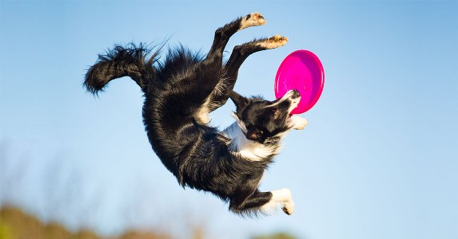
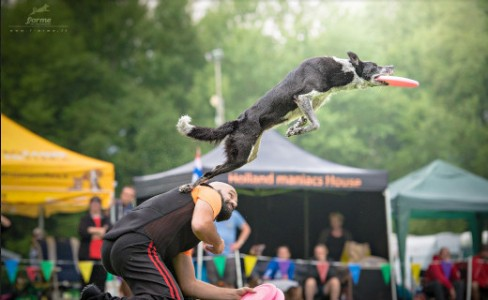

Šunų lėkščiasvydis rungtys
Šunų lėkščiasvydžio Distancijos (D-tour) varžybos
Jos būna trijų tipų.
Klasikinėse D-tour varžybose varžomasi, kas numes lėkštę toliausiai (taip, kad šuo ją pagautų). Metama iš trijų bandymų, ir visų jų rezultatai užrašomi. Į finalus eina toliausiai numetę. Moterys ir vyrai šiose varžybose varžosi atskirai. Tad čia, pagrindinis faktorius yra atstumas.
Ilgos distancijos (longshot) varžybose laimi tie, kurie ne tik sugeba numesti toli, bet ir meta itin tiksliai. Čia yra stebima pagavimo linija, kur šuo turi pagauti lėkštę. Pirmiausia lėkštė metama iš 10 metrų atstumo, tada iš 20, 30 ir t.t. (gali būti ir kitokie atstumai, bet jie metami didėjančia tvarka). Į tolimesnes distancijas pereina tik tos komandos, kurios sėkmingai numetė ir pagavo lėkštę ties atitinkama distancija. Trečia klaida reiškia, kad komanda iškrenta. Varžybos vyksta tol, kol lieka viena geriausia komanda – laimėtoja. Vyrai ir moterys vėlgi varžosi atskirai.
Komandinės distancijos varžybos vyksta tuo pačiu principu kaip ir klasikinės varžybos, tačiau čia lėkštė mėtoma nebeindividualiai. Trijų žmonių komanda gauna 5 metimus, kur kiekvienas turi numesti bent po vieną kartą. Kiekvieno komandos nario geriausias rezultatas įrašomas į bendrą sumą (t. y. iš viso trijų metimų, priklausančių skirtingiems žmonėms, rezultatai). Mišriose komandose dalyvauja 4 žmonės, ir jiems suteikiami 7 metimai.
Šunų lėkščiasvydžio vikrumo (Throw and Catch) varžybos
Šios varžybos primena estafetę, tik joje dalyvauja vienas šuo. Čia per 60 sekundžių komanda (žmogus ir šuo) turi atlikti kaip įmanoma daugiau metimų su ta pačia viena lėkšte. Taškai yra duodami pagal tai, kokiu atstumu lėkštė yra sugaunama:
- iki 15 metrų – 0 taškų.
- 15 – 25 metrai – 1 taškas.
- 25 – 35 metrai – 2 taškai.
- 35 – 50 metrų – 3 taškai.
- Bonus zona – 4 taškai.
Jei bent viena šuns koja pagavimo/nusileidimo metu yra žemesnėje zonoje, taškai duodami už ją. Šiose varžybose svarbiausia yra greitis, tikslumas ir šimtaprocentinis komandinis darbas.

Šunų lėkščiasvydžio laisvo stiliaus varžybos
Šiose varžybose taškai duodami už meistriškai, kūrybingai, atletiškai, rezultatyviai ir sklandžiai atliktą pasirodymą. Pasirodymo trukmė – iki 120 sekundžių. Galima naudoti iki 7 lėkščių.
